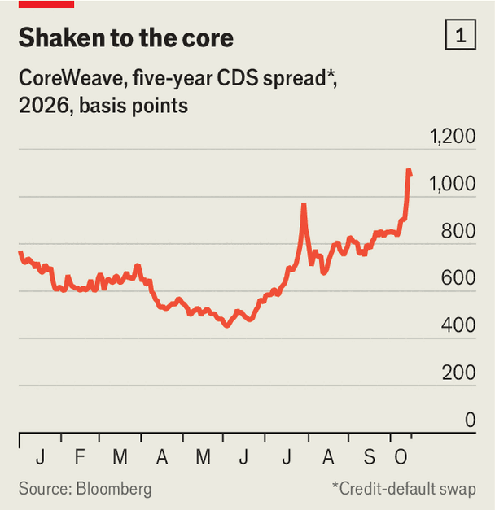
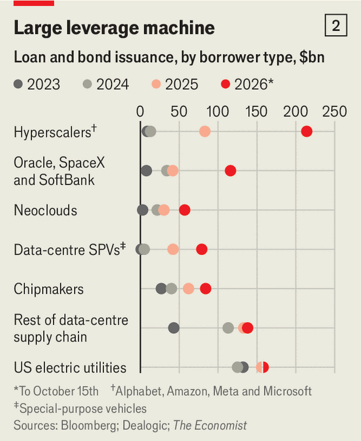

The AI industry’s gigantic debts are making investors nervous
Who will be left to pick up the bill in the event of a crash?
Oct 22nd 2026
Credit markets are coming for CoreWeave. The price of a five-year bond issued by the “neocloud”, which rents out data-centre capacity for artificial-intelligence models, has fallen by 16% since July. The bond’s yield is now 15%—a level associated with companies in financial distress—up from 10% in July. The price of credit-default swaps offering insurance against a CoreWeave default implies that the probability of the firm being unable to service its debts in the next five years has risen above 60% (see chart 1).
Investors increasingly worry that the companies at the heart of the AI boom will be unable to generate the cashflows necessary to service their vast debts. These concerns have spilled over from credit markets to cause a wobble in the stock market, too: having fallen sharply, the tech-heavy NASDAQ index is now back to where it was in mid-May. Investors are pricing in a debt stock that is getting bigger, more opaque—and increasingly risky.

It is not just CoreWeave causing furrowed brows. Yields on the bonds of rival neoclouds, including Nebius and TeraWulf, are also rising. On October 19th the public listing of Elice, a South Korean competitor, turned sour as its share price plunged by a third in a day. Three others have delayed or cancelled their own listings in the past month. These businesses live on debt. Of the ten listed neoclouds, only two are profitable. The combined borrowings of this group, at $100bn, are nine times its annual revenues. Of that debt, $57bn-worth has been issued this year.
Moreover, those sums are but a small part of the fast-growing stock of AI-related debt. Oracle, a software pedlar turned cloud provider, has now racked up $169bn of borrowings, with $25bn-worth issued this year. SoftBank, a Japanese conglomerate, has similar ambitions, and has taken out about as much since the start of January. Elon Musk’s SpaceX, for which revenue is rocketing thanks mostly to its fast-growing cloud business, has issued $65bn of debt this year.
Then there are the leading “hyperscalers”—Alphabet, Amazon, Microsoft and Meta—which have borrowed $214bn between them in 2026, up from $83bn in all of last year. An additional $79bn of data-centre debt has been issued by special-purpose vehicles (SPVs), most of which are joint ventures between cloud providers and financial institutions. On top of this is the $84bn borrowed by chipmakers such as Nvidia and others in the semiconductor supply chain. Add the amount issued by other companies providing data-centre gear and America’s electricity utilities, which are also having to invest to keep up with the AI boom, and the total borrowed so far this year rises to nearly $850bn—roughly four times the amount the same group of companies issued in 2023 (see chart 2). Together their balance-sheets carry more than $3trn of debt.

Not long ago the AI boom was financed by the cashflows of the hyperscalers. But investment has grown beyond what can be paid for by their other businesses, and far beyond what consumers and enterprises are so far spending on AI. JPMorgan Chase, a bank, expects around $5.5trn in capital spending between now and 2030 to support the technology’s growth, with three-quarters of that funded by debt. Borrowers are turning to imaginative financing strategies, and tapping all manner of lenders.
Bonds, including whoppers such as Alphabet’s $32bn offering in February, remain a popular choice. Even for these everyday instruments, however, the scale required means issuers must get creative. Foreign credit markets are increasingly sought out. So far this year about 30% of bonds issued by the five biggest cloud providers—meaning the hyperscaler quartet plus Oracle—have been in non-dollar currencies, including euros, pounds and yen.
At the same time, other instruments are growing in popularity. SPVs are now commonplace. One example is Sopaipilla, a project masterminded by Meta (and named after a pastry). It consists of ten data centres in El Paso, Texas, which in total will provide roughly a gigawatt of computing power. The site is owned by a company called Wurldwide, which in turn is owned by Meta, with a 20% stake, and BlackRock, an asset-management giant, which holds the remaining 80%. Wurldwide issued $13bn of debt in August to fund the building of the campus, which Meta has agreed to lease for 20 years.
Such structures tick plenty of boxes. BlackRock and its clients get a stream of steady income guaranteed by Meta, which in turn gets to add computing capacity while keeping the debt off its balance-sheet. Credit-rating agencies have given the SPV a score one notch below Meta’s.
Chip-backed financing, which entails using the silicon deployed in a data centre as collateral, is also on the rise. SpaceX is said to be looking to secure $40bn of funding using the approach in order to purchase more chips from Nvidia. Often chip-backed financing is arranged through an SPV. Oracle is in talks with Apollo, a private-markets giant, and Goldman Sachs, an investment bank, to fund a big purchase of semiconductors that will be held by a separate entity and leased to Oracle. Anthropic and OpenAI, two makers of frontier AI models who are eager to gain greater control over their computing capacity, are reportedly negotiating similar arrangements to procure large amounts of chips directly.
Chip-backed financing makes assessing risk “infinitely more complicated”, says Roelof Steenkamp of Fitch, a credit-rating agency. A consequence of such arrangements is that a data-centre’s bricks and mortar, the chips inside it and even the site’s power source (if it has its own) can each be financed by its own layer of debt.
On top of this are the obligations that are not quite debt, but close to it. The five biggest cloud providers have lease liabilities on their balance-sheets totalling over $250bn, according to CreditSights, a research firm. A further $1.2trn-worth of leases have been agreed but are yet to commence. Then there are commitments to purchase products from suppliers worth an additional $1.5trn.
A final complexity comes from the backstops that companies in the AI nexus with bigger and healthier balance-sheets are offering to guarantee the debts of others. Nvidia has been particularly enthusiastic in this regard, placing itself on the line to cover as much as $300bn of debt used to purchase its chips if its customers are unable to repay their creditors. Alphabet and Broadcom, which develops custom chips for cloud providers and model-makers, have also provided backstops to some of their customers. Such deals make it even more difficult for investors to determine where the risks lie, and how far losses from a default might spread.
Who is exposed? The short answer is everyone. All types of financial firms are holding AI debt, partly because there is so much of it. Large asset managers have been the biggest buyers. For example, Pimco, one of the world’s biggest bond-fund managers, bought $18bn-worth of the $27bn bond issued for Meta’s Hyperion data-centre campus in Louisiana. It then sold on tranches of the debt to institutional investors, such as pension funds and insurance firms.
Providers of private credit, including Apollo and Blackstone, are spearheading many of the more creative deals. Sometimes these loans, too, are syndicated to institutional investors—including insurers controlled by the private-credit providers themselves. A sizeable chunk of the debt Apollo lent to Broadcom in June reportedly ended up on the books of Athena, its insurance arm. Hedge funds have also piled in to the market for AI debt, showing particular interest in the neoclouds.
Despite the recent market wobble, investors on the whole are not yet panicking about the debt binge. Only about 15% of the value of AI-related bonds issued this year have junk status. And although the various backstops in place make the stock of AI debt more difficult to interrogate, the cash-rich balance-sheets of companies like Nvidia would help to absorb any shock. On October 15th Jensen Huang, Nvidia’s boss, defended the prospects of CoreWeave, some of whose debts his company has guaranteed, arguing that its “cost of capital is actually decreasing” over time.
Even so, dangers lurk ahead. One threat is from rising borrowing costs. War in the Gulf, persistent inflation and anxiety over the growth of public debt have caused yields on government bonds to climb rapidly in recent months, pushing up interest rates for corporate borrowers. The scale of debt issued in support of the AI boom has itself played a part. For the deep-pocketed hyperscalers, that is a source of pain; for shakier borrowers like CoreWeave—whose interest bill already soaks up a quarter of annual revenue—it could prove deadly.
The even bigger threat would be if demand for AI were to stagnate. Data from Ramp, a provider of corporate charge cards, shows that spending on AI among its customers has flatlined since July, as businesses try to contain spiralling costs. Softening growth, in turn, might lead Anthropic or OpenAI to delay indefinitely their much-anticipated public listings, which could cause investors to rethink their exposure to AI. The bigger the tower of AI debt grows, the more vulnerable it will become—and the graver the consequences should it come crashing down. ■
Correction (October 22nd): An earlier version of this article understated the size of listed neoclouds’ debts relative to their revenues. Sorry.